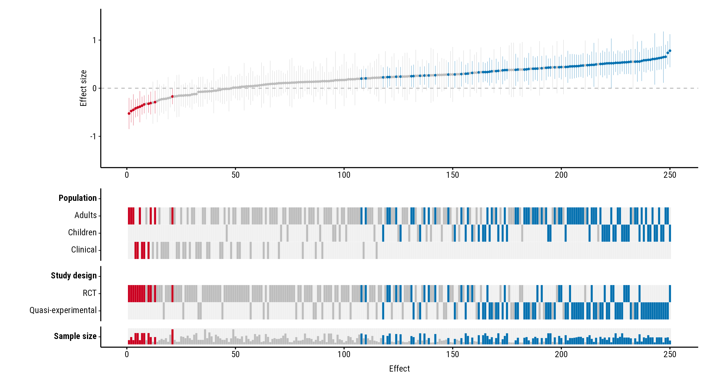
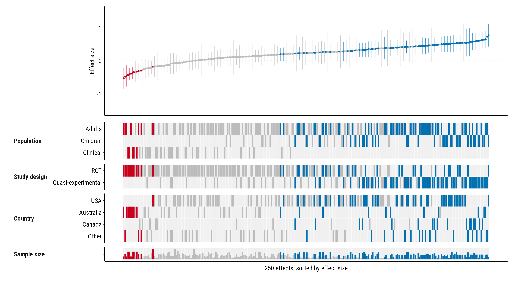

A forestmap works the same with hundreds of effects as with a few dozen. This page shows how a plot of 250 effects looks, and which settings help it stay readable.
250 effects
The forestmap_example data has 60 studies. For a larger
example, draw 250 effects from it at random and add a little noise, so
no two are the same:
set.seed(1)
big <- forestmap_example[sample(nrow(forestmap_example), 250, replace = TRUE), ]
big$smd <- big$smd + rnorm(nrow(big), 0, 0.1)Plot it as usual:
plot_forestmap(
big, "smd", vi = "vi",
moderators = c(
"Population" = "population",
"Study design" = "design",
"Sample size" = "n"
)
)
Each effect is a column, about 0.4% of the plot’s width. With more than 60 effects, the points, interval lines and white borders between heatmap tiles get thinner, so neighbouring effects don’t merge into a block. The plot then reads as a pattern rather than as single studies: the colour bands show where in the ranking studies with each property fall, and the sample-size row shows whether larger studies find smaller effects.
Settings that help
The rank numbers along the study axis say little with 250 effects, so
study_ticks = FALSE removes them. The compact layout, with
property names to the left of their rows, makes the heatmap shorter and
leaves more room for the forest plot. max_levels merges
rare levels into “Other”, so each property has fewer, fuller rows:
plot_forestmap(
big, "smd", vi = "vi",
moderators = c(
"Population" = "population",
"Study design" = "design",
"Country" = "country",
"Sample size" = "n"
),
layout = "compact",
max_levels = 4,
study_ticks = FALSE,
x_label = "250 effects, sorted by effect size"
)
Give the plot plenty of width when you save it. As a rough guide, allow about 0.04 inches per effect, and at least 8 inches:
p <- plot_forestmap(big, "smd", vi = "vi", moderators = c("Population" = "population"))
ggplot2::ggsave("forestmap.png", p, width = 12, height = 6, dpi = 300)The alternative: a vertical layout
When you want to name each study, or the plot is going on a portrait
page, turn it on its side with orientation = "vertical".
Each effect is then a row, and the plot grows downwards instead of
across. See the vertical layout guide.